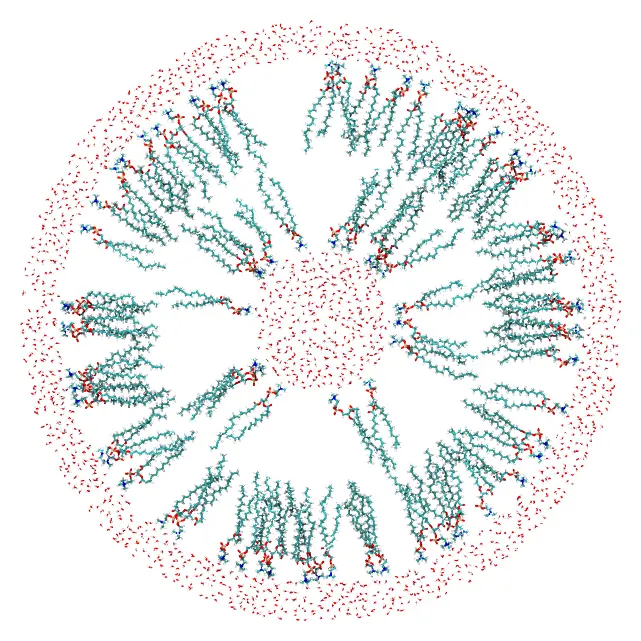
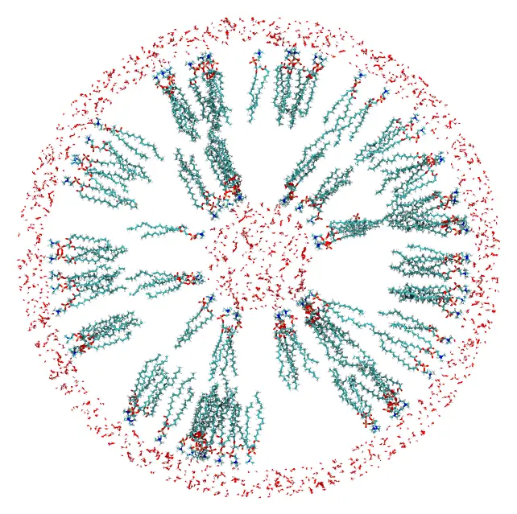

Spherical vesicle
A POPC vesicle with water inside and around it. The water and the two leaflets of the vesicle are placed in spherical shells, and constraints on the polar heads and on the ends of the chains orient the lipids of each leaflet.

A slab through the center of the vesicle: the water inside, the two leaflets, and the water outside.
Files: popc.pdb, water.pdb and the input file vesicle.inp.
The lipid is the POPC of the Lipid bilayer tutorial (from the packmol_lipids set of MolSimTestFiles): atom 1 is the nitrogen of the polar head, and atoms 88 and 131 are the ends of the two chains, 26 Å from the head.
The size of the vesicle
Real vesicles are large: the smallest have diameters of about 20 nm. A POPC bilayer is about 55 Å thick (with its head groups), so a vesicle with some water inside is already a system of about 200 thousand atoms. Here, the vesicle has 25 Å of water inside, and an outer radius of about 81 Å: a diameter of 16 nm, a little smaller than the smallest real vesicles.
The leaflets are placed as in the flat bilayer: the head atoms in a narrow band, and the chain ends within 6 Å of the middle of the bilayer, at r = 53 Å:
| Leaflet | Heads (atom 1) | Chain ends (atoms 88, 131) |
|---|---|---|
| inner | r < 25 Å | r > 47 Å |
| outer | r > 81 Å | r < 59 Å |
The heads and the chain ends of each leaflet are 22 Å apart, 85% of the length of the lipid, as in the bilayer.
The numbers of lipids
In a curved leaflet, the area available to each lipid is not the same at the heads and at the chain ends: it is smaller at the heads of the inner leaflet, and at the chain ends of the outer leaflet. The lipids are rigid in the packing, so the number of lipids of each leaflet is limited by its most crowded surface, with the 64 Ų per lipid of the flat bilayer:
- inner leaflet: the surface of the heads, 4π × 25² / 64 = 123 lipids;
- outer leaflet: the surface of the middle of the bilayer, 4π × 53² / 64 = 552 lipids.
The other ends of the lipids are then less dense than in a flat bilayer, which a simulation relaxes. Computing the numbers of lipids from the area at the heads of the outer leaflet (4π × 81² / 64 = 1288) would put twice as many lipids in it as fit at its chain ends, and the packing would fail.
The water inside is a sphere of radius 22 Å, with 4/3 π 22³ / 29.9 = 1492 molecules (29.9 ų per molecule at 1 g/mL), and the water outside a shell from 83 Å to 95 Å, with 40009 molecules.
Command line
The input file:
#
# POPC vesicle with water inside and outside
#
tolerance 2.0
output vesicle.pdb
# Water inside the vesicle: a sphere of radius 22 Å
structure water.pdb
number 1492
inside sphere 0. 0. 0. 22.
end structure
# Inner leaflet: the heads (atom 1, N) inside the sphere of radius 25 Å, pointing to
# the water inside, and the ends of the chains (atoms 88 and 131) outside the sphere
# of radius 47 Å, near the middle of the bilayer (r = 53 Å)
structure popc.pdb
number 123
atoms 1
inside sphere 0. 0. 0. 25.
end atoms
atoms 88 131
outside sphere 0. 0. 0. 47.
end atoms
end structure
# Outer leaflet: the ends of the chains inside the sphere of radius 59 Å, and the
# heads outside the sphere of radius 81 Å, pointing to the water outside
structure popc.pdb
number 552
atoms 88 131
inside sphere 0. 0. 0. 59.
end atoms
atoms 1
outside sphere 0. 0. 0. 81.
end atoms
end structure
# Water outside the vesicle: a shell from 83 to 95 Å
structure water.pdb
number 40009
outside sphere 0. 0. 0. 83.
inside sphere 0. 0. 0. 95.
end structureThe lipids have no constraint on the whole molecule: only the head and the chain ends are constrained, and the rest of each molecule follows them. The outer water has two constraints on every atom, which together define a spherical shell. A thicker layer of water, or a periodic box around the vesicle, can be built the same way, with many more water molecules.
Check the initial approximation first
For a system with spherical shells and lipids oriented by constraints on some of their atoms, first check that the constraints place the molecules where intended. Add the check keyword to the input file:
checkand run it as below. Packmol then only builds the initial approximation, in a few seconds: each molecule is placed in its region, satisfying the constraints, but the molecules may still overlap. It is written to the output file (vesicle.pdb). Look at it in a molecular visualization program:

A slab through the center of the initial approximation: the two leaflets and the water are already in their shells, but molecules may overlap.
When the molecules are where they should be, remove check, and run the packing. If the constraints cannot be satisfied at all, even without the distances between the molecules, Packmol stops after the initial approximation with an error (unless the continue_failed_initial_packing keyword is set): that is almost always a sign of wrong constraints.
Packing
Run it with:
packmol vesicle.inpThe packed system (about 215 thousand atoms) is written to vesicle.pdb, in about 10 minutes with 8 threads.
Julia
using Packmolorigin = [0., 0., 0.]water_inside = structure_type("water.pdb"; number = 1492, constraints = [InsideSphere(origin, 22.0)],)# Heads (atom 1) in, chain ends (atoms 88 and 131) outinner_leaflet = structure_type("popc.pdb"; number = 123, atom_constraints = [ [1] => InsideSphere(origin, 25.0), [88, 131] => OutsideSphere(origin, 47.0), ],)# Chain ends in, heads outouter_leaflet = structure_type("popc.pdb"; number = 552, atom_constraints = [ [88, 131] => InsideSphere(origin, 59.0), [1] => OutsideSphere(origin, 81.0), ],)water_outside = structure_type("water.pdb"; number = 40009, constraints = [OutsideSphere(origin, 83.0), InsideSphere(origin, 95.0)],)system = PackmolSystem([water_inside, inner_leaflet, outer_leaflet, water_outside]; output = "vesicle.pdb", tolerance = 2.0,)packmol(system)As with the input file, check the initial approximation first, with PackmolSystem(...; check = true).
InsideSphere(center, radius) and OutsideSphere(center, radius) take the parameters of inside sphere and outside sphere.